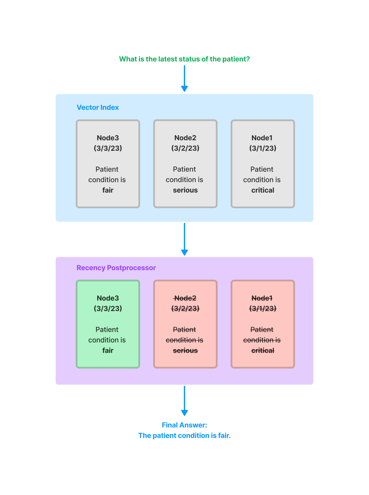

Node Postprocessor Modules#
SimilarityPostprocessor#
Used to remove nodes that are below a similarity score threshold.
from llama_index.core.postprocessor import SimilarityPostprocessor
postprocessor = SimilarityPostprocessor(similarity_cutoff=0.7)
postprocessor.postprocess_nodes(nodes)
KeywordNodePostprocessor#
Used to ensure certain keywords are either excluded or included.
from llama_index.core.postprocessor import KeywordNodePostprocessor
postprocessor = KeywordNodePostprocessor(
required_keywords=["word1", "word2"], exclude_keywords=["word3", "word4"]
)
postprocessor.postprocess_nodes(nodes)
MetadataReplacementPostProcessor#
Used to replace the node content with a field from the node metadata. If the field is not present in the metadata, then the node text remains unchanged. Most useful when used in combination with the SentenceWindowNodeParser.
from llama_index.core.postprocessor import MetadataReplacementPostProcessor
postprocessor = MetadataReplacementPostProcessor(
target_metadata_key="window",
)
postprocessor.postprocess_nodes(nodes)
LongContextReorder#
Models struggle to access significant details found in the center of extended contexts. A study observed that the best performance typically arises when crucial data is positioned at the start or conclusion of the input context. Additionally, as the input context lengthens, performance drops notably, even in models designed for long contexts.
This module will re-order the retrieved nodes, which can be helpful in cases where a large top-k is needed.
from llama_index.core.postprocessor import LongContextReorder
postprocessor = LongContextReorder()
postprocessor.postprocess_nodes(nodes)
SentenceEmbeddingOptimizer#
This postprocessor optimizes token usage by removing sentences that are not relevant to the query (this is done using embeddings).
The percentile cutoff is a measure for using the top percentage of relevant sentences.
The threshold cutoff can be specified instead, which uses a raw similarity cutoff for picking which sentences to keep.
from llama_index.core.postprocessor import SentenceEmbeddingOptimizer
postprocessor = SentenceEmbeddingOptimizer(
embed_model=service_context.embed_model,
percentile_cutoff=0.5,
# threshold_cutoff=0.7
)
postprocessor.postprocess_nodes(nodes)
A full notebook guide can be found here
CohereRerank#
Uses the "Cohere ReRank" functionality to re-order nodes, and returns the top N nodes.
from llama_index.postprocessor.cohere_rerank import CohereRerank
postprocessor = CohereRerank(
top_n=2, model="rerank-english-v2.0", api_key="YOUR COHERE API KEY"
)
postprocessor.postprocess_nodes(nodes)
Full notebook guide is available here.
SentenceTransformerRerank#
Uses the cross-encoders from the sentence-transformer package to re-order nodes, and returns the top N nodes.
from llama_index.core.postprocessor import SentenceTransformerRerank
# We choose a model with relatively high speed and decent accuracy.
postprocessor = SentenceTransformerRerank(
model="cross-encoder/ms-marco-MiniLM-L-2-v2", top_n=3
)
postprocessor.postprocess_nodes(nodes)
Full notebook guide is available here.
Please also refer to the sentence-transformer docs for a more complete list of models (and also shows tradeoffs in speed/accuracy). The default model is cross-encoder/ms-marco-TinyBERT-L-2-v2, which provides the most speed.
LLM Rerank#
Uses a LLM to re-order nodes by asking the LLM to return the relevant documents and a score of how relevant they are. Returns the top N ranked nodes.
from llama_index.core.postprocessor import LLMRerank
postprocessor = LLMRerank(top_n=2, service_context=service_context)
postprocessor.postprocess_nodes(nodes)
Full notebook guide is available her for Gatsby and here for Lyft 10K documents.
JinaRerank#
Uses the "Jina ReRank" functionality to re-order nodes, and returns the top N nodes.
from llama_index.postprocessor.jinaai_rerank import JinaRerank
postprocessor = JinaRerank(
top_n=2, model="jina-reranker-v1-base-en", api_key="YOUR JINA API KEY"
)
postprocessor.postprocess_nodes(nodes)
Full notebook guide is available here.
FixedRecencyPostprocessor#
This postprocessor returns the top K nodes sorted by date. This assumes there is a date field to parse in the metadata of each node.
from llama_index.core.postprocessor import FixedRecencyPostprocessor
postprocessor = FixedRecencyPostprocessor(
tok_k=1, date_key="date" # the key in the metadata to find the date
)
postprocessor.postprocess_nodes(nodes)

A full notebook guide is available here.
EmbeddingRecencyPostprocessor#
This postprocessor returns the top K nodes after sorting by date and removing older nodes that are too similar after measuring embedding similarity.
from llama_index.core.postprocessor import EmbeddingRecencyPostprocessor
postprocessor = EmbeddingRecencyPostprocessor(
service_context=service_context, date_key="date", similarity_cutoff=0.7
)
postprocessor.postprocess_nodes(nodes)
A full notebook guide is available here.
TimeWeightedPostprocessor#
This postprocessor returns the top K nodes applying a time-weighted rerank to each node. Each time a node is retrieved, the time it was retrieved is recorded. This biases search to favor information that has not been returned in a query yet.
from llama_index.core.postprocessor import TimeWeightedPostprocessor
postprocessor = TimeWeightedPostprocessor(time_decay=0.99, top_k=1)
postprocessor.postprocess_nodes(nodes)
A full notebook guide is available here.
(Beta) PIINodePostprocessor#
The PII (Personal Identifiable Information) postprocessor removes information that might be a security risk. It does this by using NER (either with a dedicated NER model, or with a local LLM model).
LLM Version#
from llama_index.core.postprocessor import PIINodePostprocessor
postprocessor = PIINodePostprocessor(
service_context=service_context # this should be setup with an LLM you trust
)
postprocessor.postprocess_nodes(nodes)
NER Version#
This version uses the default local model from Hugging Face that is loaded when you run pipeline("ner").
from llama_index.core.postprocessor import NERPIINodePostprocessor
postprocessor = NERPIINodePostprocessor()
postprocessor.postprocess_nodes(nodes)
A full notebook guide for both can be found here.
(Beta) PrevNextNodePostprocessor#
Uses pre-defined settings to read the Node relationships and fetch either all nodes that come previously, next, or both.
This is useful when you know the relationships point to important data (either before, after, or both) that should be sent to the LLM if that node is retrieved.
from llama_index.core.postprocessor import PrevNextNodePostprocessor
postprocessor = PrevNextNodePostprocessor(
docstore=index.docstore,
num_nodes=1, # number of nodes to fetch when looking forwards or backwards
mode="next", # can be either 'next', 'previous', or 'both'
)
postprocessor.postprocess_nodes(nodes)

(Beta) AutoPrevNextNodePostprocessor#
The same as PrevNextNodePostprocessor, but lets the LLM decide the mode (next, previous, or both).
from llama_index.core.postprocessor import AutoPrevNextNodePostprocessor
postprocessor = AutoPrevNextNodePostprocessor(
docstore=index.docstore,
service_context=service_context,
num_nodes=1, # number of nodes to fetch when looking forwards or backwards)
)
postprocessor.postprocess_nodes(nodes)
A full example notebook is available here.
(Beta) RankGPT#
Uses RankGPT agent to rerank documents according to relevance. Returns the top N ranked nodes.
from llama_index.postprocessor.rankgpt_rerank import RankGPTRerank
postprocessor = RankGPTRerank(top_n=3, llm=OpenAI(model="gpt-3.5-turbo-16k"))
postprocessor.postprocess_nodes(nodes)
Full notebook guide is available here.
Colbert Reranker#
Uses Colbert V2 model as a reranker to rerank documents according to the fine-grained similarity between query tokens and passage tokens. Returns the top N ranked nodes.
from llama_index.postprocessor.colbert_rerank import ColbertRerank
colbert_reranker = ColbertRerank(
top_n=5,
model="colbert-ir/colbertv2.0",
tokenizer="colbert-ir/colbertv2.0",
keep_retrieval_score=True,
)
query_engine = index.as_query_engine(
similarity_top_k=10,
node_postprocessors=[colbert_reranker],
)
response = query_engine.query(
query_str,
)
Full notebook guide is available here.
rankLLM#
Uses models from rankLLM to rerank documents. Returns the top N ranked nodes.
from llama_index.postprocessor.rankllm_rerank import RankLLMRerank
# RankZephyr reranker, return top 5 candidates
reranker = RankLLMRerank(model="rank_zephyr", top_n=5)
reranker.postprocess_nodes(nodes)
A full notebook example is available.